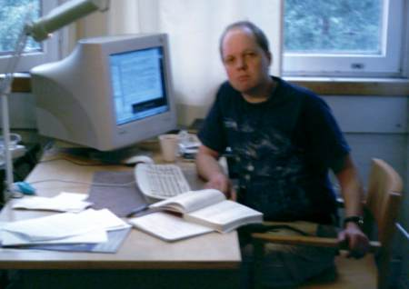

Mikko NummelinDI, ohjelmistosuunnittelijaOheinen kuva on otettu TKK:n matematiikan laitoksella diplomityötä tehdessä. |
 |
Tervetuloa kotisivulleni. Olen parhaillaan töissä ohjelmistosuunnittelijana Ixonos Oyj:ssä ja suoritan jatko-opintoja Teknillisessä Korkeakoulussa. Tutkimusalanani on teknillinen matematiikka ja syventävänä aihealueenani on ohjelmistojärjestelmät.
Ks. myös blogiani.
| Lähdekoodipaketti |